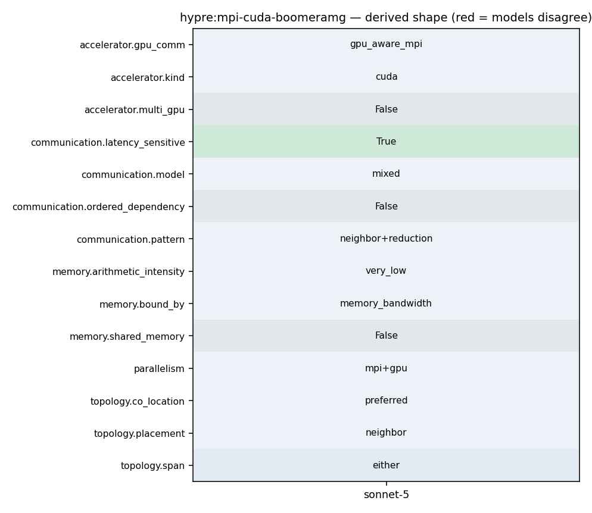

mpirun -np <N> ij -solver 1 (built with --with-cuda / -DHYPRE_ENABLE_CUDA=ON; one GPU typically bound per MPI rank)
501 [hypre_using_gpu_profiling=no] 502 ) 503 504 AC_ARG_ENABLE(gpu-aware-mpi, 505 AS_HELP_STRING([--enable-gpu-aware-mpi], 506 [Use GPU memory aware MPI]), 507 [case "${enableval}" in 508 yes) hypre_gpu_mpi=yes ;; 509 no) hypre_gpu_mpi=no ;; 510 *) AC_MSG_ERROR([Bad value ${enableval} for --enable-gpu-aware-mpi]) ;; 511 esac], 512 [hypre_gpu_mpi=no] 513 ) 514 515 dnl * The AC_DEFINE is below, after hypre_using_mpi is completely set 516 dnl * Need to change to a new approach that always defines variable to some value
380 * - Feature 381 - Autotools (configure) 382 - CMake 383 * - | CUDA Support 384 | (default is off) 385 - ``--with-cuda`` 386 - ``-DHYPRE_ENABLE_CUDA=ON`` 387 * - | HIP Support 388 | (default is off) 389 - ``--with-hip`` 390 - ``-DHYPRE_ENABLE_HIP=ON`` 391 * - | SYCL Support 392 | (default is off) 393 - ``--with-sycl`` 394 - ``-DHYPRE_ENABLE_SYCL=ON`` 395 * - | SYCL Target 396 | (default is empty, 397 | **SYCL** only)
15 * hypre_BoomerAMGRelaxHybridGaussSeidelDevice 16 *--------------------------------------------------------------------------*/ 17 18 HYPRE_Int 19 hypre_BoomerAMGRelaxHybridGaussSeidelDevice( hypre_ParCSRMatrix *A, 20 hypre_ParVector *f, 21 HYPRE_Int *cf_marker, 22 HYPRE_Int relax_points, 23 HYPRE_Real relax_weight, 24 HYPRE_Real omega, 25 HYPRE_Real *l1_norms, 26 hypre_ParVector *u, 27 hypre_ParVector *Vtemp, 28 hypre_ParVector *Ztemp, 29 HYPRE_Int GS_order, 30 HYPRE_Int Symm ) 31 { 32 HYPRE_UNUSED_VAR(cf_marker); 33 HYPRE_UNUSED_VAR(relax_points); 34 HYPRE_UNUSED_VAR(omega); 35 36 /* Vtemp, Ztemp have the fine-grid size. Create two shell vectors that have the correct size */ 37 hypre_ParVector *w1 = hypre_ParVectorCloneShallow(f); 38 hypre_ParVector *w2 = hypre_ParVectorCloneShallow(u);
62 ip = hypre_ParCSRCommPkgRecvProc(comm_pkg, i); 63 vec_start = hypre_ParCSRCommPkgRecvVecStart(comm_pkg, i); 64 vec_len = hypre_ParCSRCommPkgRecvVecStart(comm_pkg, i + 1) - vec_start; 65 hypre_MPI_Irecv(&d_recv_data[vec_start * num_vecs], vec_len * num_vecs, 66 HYPRE_MPI_COMPLEX, ip, 0, comm, &requests[j++]); 67 } 68 for (i = 0; i < num_sends; i++) 69 { 70 vec_start = hypre_ParCSRCommPkgSendMapStart(comm_pkg, i); 71 vec_len = hypre_ParCSRCommPkgSendMapStart(comm_pkg, i + 1) - vec_start; 72 ip = hypre_ParCSRCommPkgSendProc(comm_pkg, i); 73 hypre_MPI_Isend(&d_send_data[vec_start * num_vecs], vec_len * num_vecs, 74 HYPRE_MPI_COMPLEX, ip, 0, comm, &requests[j++]); 75 } 76 break; 77 } 78 case 2: 79 { 80 HYPRE_Complex *d_send_data = (HYPRE_Complex *) send_data; 81 HYPRE_Complex *d_recv_data = (HYPRE_Complex *) recv_data; 82 for (i = 0; i < num_sends; i++) 83 { 84 vec_start = hypre_ParCSRCommPkgSendMapStart(comm_pkg, i); 85 vec_len = hypre_ParCSRCommPkgSendMapStart(comm_pkg, i + 1) - vec_start;
62 ip = hypre_ParCSRCommPkgRecvProc(comm_pkg, i); 63 vec_start = hypre_ParCSRCommPkgRecvVecStart(comm_pkg, i); 64 vec_len = hypre_ParCSRCommPkgRecvVecStart(comm_pkg, i + 1) - vec_start; 65 hypre_MPI_Irecv(&d_recv_data[vec_start * num_vecs], vec_len * num_vecs, 66 HYPRE_MPI_COMPLEX, ip, 0, comm, &requests[j++]); 67 } 68 for (i = 0; i < num_sends; i++) 69 { 70 vec_start = hypre_ParCSRCommPkgSendMapStart(comm_pkg, i); 71 vec_len = hypre_ParCSRCommPkgSendMapStart(comm_pkg, i + 1) - vec_start; 72 ip = hypre_ParCSRCommPkgSendProc(comm_pkg, i); 73 hypre_MPI_Isend(&d_send_data[vec_start * num_vecs], vec_len * num_vecs, 74 HYPRE_MPI_COMPLEX, ip, 0, comm, &requests[j++]); 75 } 76 break; 77 } 78 case 2: 79 { 80 HYPRE_Complex *d_send_data = (HYPRE_Complex *) send_data; 81 HYPRE_Complex *d_recv_data = (HYPRE_Complex *) recv_data; 82 for (i = 0; i < num_sends; i++) 83 { 84 vec_start = hypre_ParCSRCommPkgSendMapStart(comm_pkg, i); 85 vec_len = hypre_ParCSRCommPkgSendMapStart(comm_pkg, i + 1) - vec_start;
15 * hypre_BoomerAMGRelaxHybridGaussSeidelDevice 16 *--------------------------------------------------------------------------*/ 17 18 HYPRE_Int 19 hypre_BoomerAMGRelaxHybridGaussSeidelDevice( hypre_ParCSRMatrix *A, 20 hypre_ParVector *f, 21 HYPRE_Int *cf_marker, 22 HYPRE_Int relax_points, 23 HYPRE_Real relax_weight, 24 HYPRE_Real omega, 25 HYPRE_Real *l1_norms, 26 hypre_ParVector *u, 27 hypre_ParVector *Vtemp, 28 hypre_ParVector *Ztemp, 29 HYPRE_Int GS_order, 30 HYPRE_Int Symm ) 31 { 32 HYPRE_UNUSED_VAR(cf_marker); 33 HYPRE_UNUSED_VAR(relax_points); 34 HYPRE_UNUSED_VAR(omega); 35 36 /* Vtemp, Ztemp have the fine-grid size. Create two shell vectors that have the correct size */ 37 hypre_ParVector *w1 = hypre_ParVectorCloneShallow(f); 38 hypre_ParVector *w2 = hypre_ParVectorCloneShallow(u);
15 * hypre_BoomerAMGRelaxHybridGaussSeidelDevice 16 *--------------------------------------------------------------------------*/ 17 18 HYPRE_Int 19 hypre_BoomerAMGRelaxHybridGaussSeidelDevice( hypre_ParCSRMatrix *A, 20 hypre_ParVector *f, 21 HYPRE_Int *cf_marker, 22 HYPRE_Int relax_points, 23 HYPRE_Real relax_weight, 24 HYPRE_Real omega, 25 HYPRE_Real *l1_norms, 26 hypre_ParVector *u, 27 hypre_ParVector *Vtemp, 28 hypre_ParVector *Ztemp, 29 HYPRE_Int GS_order, 30 HYPRE_Int Symm ) 31 { 32 HYPRE_UNUSED_VAR(cf_marker); 33 HYPRE_UNUSED_VAR(relax_points); 34 HYPRE_UNUSED_VAR(omega); 35 36 /* Vtemp, Ztemp have the fine-grid size. Create two shell vectors that have the correct size */ 37 hypre_ParVector *w1 = hypre_ParVectorCloneShallow(f); 38 hypre_ParVector *w2 = hypre_ParVectorCloneShallow(u);
9 #include "_hypre_parcsr_ls.h" 10 #include "_hypre_utilities.hpp" 11 12 #if defined(HYPRE_USING_GPU) 13 14 /*-------------------------------------------------------------------------- 15 * hypre_BoomerAMGRelaxHybridGaussSeidelDevice 16 *--------------------------------------------------------------------------*/ 17 18 HYPRE_Int 19 hypre_BoomerAMGRelaxHybridGaussSeidelDevice( hypre_ParCSRMatrix *A, 20 hypre_ParVector *f, 21 HYPRE_Int *cf_marker, 22 HYPRE_Int relax_points,
62 ip = hypre_ParCSRCommPkgRecvProc(comm_pkg, i); 63 vec_start = hypre_ParCSRCommPkgRecvVecStart(comm_pkg, i); 64 vec_len = hypre_ParCSRCommPkgRecvVecStart(comm_pkg, i + 1) - vec_start; 65 hypre_MPI_Irecv(&d_recv_data[vec_start * num_vecs], vec_len * num_vecs, 66 HYPRE_MPI_COMPLEX, ip, 0, comm, &requests[j++]); 67 } 68 for (i = 0; i < num_sends; i++) 69 { 70 vec_start = hypre_ParCSRCommPkgSendMapStart(comm_pkg, i); 71 vec_len = hypre_ParCSRCommPkgSendMapStart(comm_pkg, i + 1) - vec_start; 72 ip = hypre_ParCSRCommPkgSendProc(comm_pkg, i); 73 hypre_MPI_Isend(&d_send_data[vec_start * num_vecs], vec_len * num_vecs, 74 HYPRE_MPI_COMPLEX, ip, 0, comm, &requests[j++]); 75 } 76 break; 77 } 78 case 2: 79 { 80 HYPRE_Complex *d_send_data = (HYPRE_Complex *) send_data; 81 HYPRE_Complex *d_recv_data = (HYPRE_Complex *) recv_data; 82 for (i = 0; i < num_sends; i++) 83 { 84 vec_start = hypre_ParCSRCommPkgSendMapStart(comm_pkg, i); 85 vec_len = hypre_ParCSRCommPkgSendMapStart(comm_pkg, i + 1) - vec_start;
365 features may have different levels of support across these platforms. Key considerations 366 when building for GPUs are: 367 368 1. Only one GPU backend can be enabled at a time (CUDA, HIP, or SYCL) 369 2. Some features like full support for 64-bit integers (`BigInt`) are not available 370 3. Memory management options (device vs unified memory) affect solver availability 371 4. Umpire is implicitly enabled by default when building with CUDA or HIP support